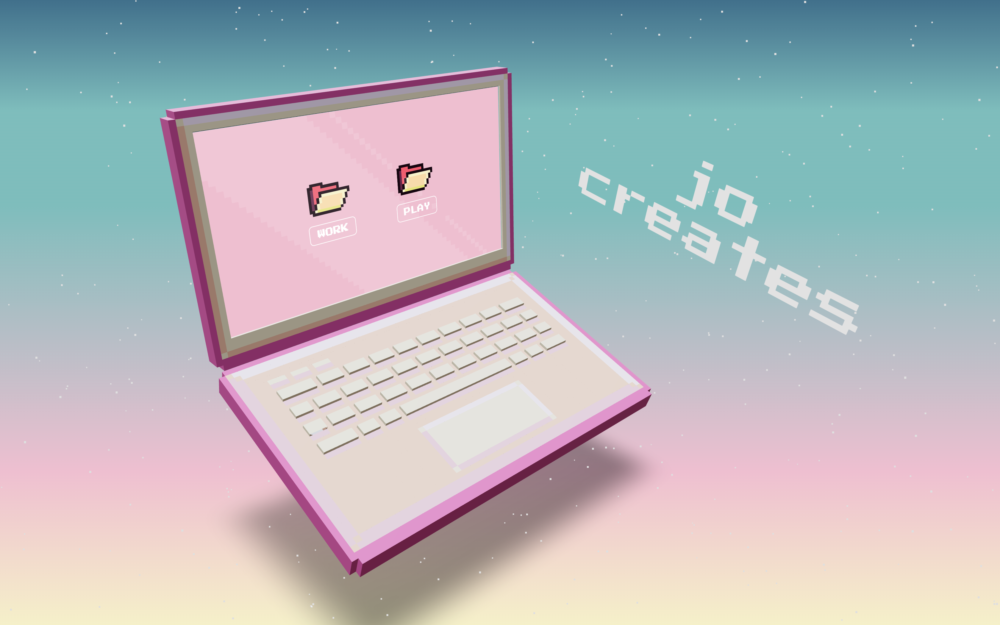

BACK
WWW.JOCREAT.ES
a portfolio using react 3fiber

jo creates is an online portfolio I made using React3Fiber -
a React library based on Three JS, a 3D Javascript Library.
I used Vite with node.js to make the development process
quick and efficient.
The computer screen is actually an iframe linking to another site
and can be found at www.an-html-portfolio.netlify.app.
This project is still in progress, as I'd love to add a camera
view change function so that the screen can be made more visible.
I would also love to add a full desk, rather than just a laptop. You can
see my 3d office build progress
HERE.
Artwork for this project
can be found HERE.